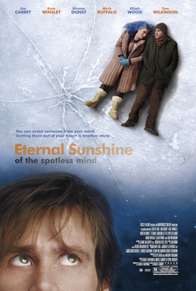
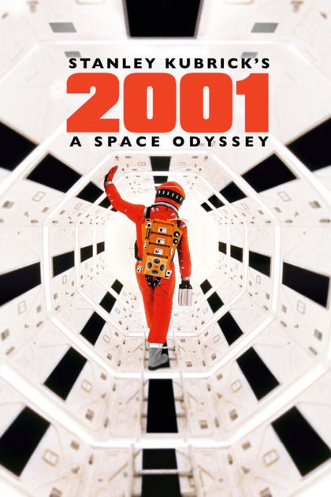
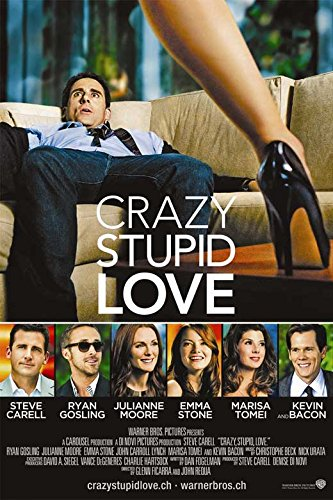

Movie Pick for your Zodiac Sign
Sometimes, choosing a good movie to watch can be an agonizing and time-consuming process. Regardless of what type of movies you like, being overwhelmed with too many choices is a modern problem. There are just too many movies to choose from, however, we made this ordeal a bit easier for you by revealing the movies you should watch based on your zodiac sign. So, next time you plan to have a movie night and you don't know what to watch, take a look at our list of the perfect film options you're guaranteed to love. Here is a look at the best movie picks for your astrological sign!
Written by Rita SKeeter.
Visit for more at:
https://www.horoscopelogy.com/us/
Email link: Send Mail
-
Aries (March 21 – April 19)
If you were born under the sign of Aries, you either like romantic movies that help you unwind or high-energy adventure or action movies that keep your mind running. Aries is a fire sign, know for its limitless energy, courage, and competitive spirit. This means that any "James Bond" movie appeals to those born under this sign. "Sky High" and “Die Hard with a Vengeance” are great action-packed movies for you. Rom-coms like "The Break Up" or "A Lot Like Love" also appeal to this zodiac sign.
Sky High
The BreakUp
Die Hard with a Vengeance

A lot like Love
-
Taurus (April 20 – May 20)
For you, it's all about light comedy movies that can make you laugh out loud and forget about your problems. Just like the animal that represents this sign, Taureans are steady and creative people who prioritize comfort, beauty, and material pleasures. The Marilyn Monroe classic musical "Gentlemen Prefer Blondes" or any other old style movie is the perfect pick for your sign. Anything by Quentin Tarantino also appeals to you, so the "Kill Bill" trilogy might be a good choice if you're planning a movie marathon.
Gentlemen Prefer Blondes

Pulp Fiction

Kill Bill

Sin City
-
Gemini (May 21 - June 20)
If you were born under the sign of Gemini, you're generous, affectionate, curious, always asking questions and trying to experience everything the world has to offer. This is an intense sign, so no wonder people born under this sign enjoy complex psychological dramas, thrillers, horror, or mysteries. Roman Polanski’s “The Tenant” or “Eternal Sunshine of the Spotless Mind” are good movies that will keep you entertained all night long. You also enjoy erotic films, so "Secretary" or "Nine and Half Weeks" are some great choices for this zodiac sign.

The Tenant
 Eternal Sunshine of the Spotless Mind
Secretary
Nine and half Weeks
-
Cancer (June 21 – July 22)
As a Cancer, you're deeply emotional and intuitive, but one of the most challenging signs to get to know because you're afraid of getting hurt so you're always guarded. You can watch anything and everything, but the more drama and romance, the better. Even male crabs enjoy watching sentimental chick flicks like "Sleepless in Seattle", "Love, Actually", or "Mona Lisa Smile". Historical romance also appeals to your feminine zodiac sign, so you might also enjoy the movie "Julia" which takes places during World War II.
Sleepless in Seattle
Love Actualy
Mona Lisa Smile
Julia
-
Leo (July 23 – August 22)
You can be very generous, affectionate, and warmhearted, but you can also be a little superficial and self-centered. When it comes to your favorite movie genre, it all depends on your mood swings. You can go from watching mystery or drama to romance and comedy. You're secretly sentimental, which means that you like to watch tearjerker movies like "Love Story" from time to time. “Terms of Endearment”, "It's Wonderful Life" or "How to Be Single" are also some great movies a Leo would really love. You also like both vintage and modern comedy.
Love Story
Terms of Endearment
It's a wonderful Life

How to be single
-
Virgo (August 23 - September 22)
You're a practical and analytical person that enjoys documentaries, science fiction, thrillers, and real-life stories. Another thing you love is to research the subject of the movie before or after watching. Sci-fi movies like “2001: A Space Odyssey” and "The Matrix" would be perfect for people born under this zodiac sign. You're also a huge animal lover, so it's not surprising that you like movies that feature animals, such as "Babe", "Ace Ventura", or "March of the Penguins". A Space Odyssey

The Matrix
babe
Ace Ventura
-
Libra (September 23 - October 22)
As a true Libra that's represented by the scales, you're a hopeless romantic that strives day and night for harmony, justice, and balance. You like to relax with a good, funny movie about animals, which makes "Beethoven", “White Tuft: The Little Beaver”, and "The Adventures of Milo and Otis" the perfect choices for you. Since you're also a sentimental sign, you would also enjoy some classic chick flick like "Muriel's Wedding", "Before Sunrise",“My Best Friend’s Wedding”, and "Clueless".White tuft : The Little Beaver
The Adventures of Milo and Otis

Before Sunrise
Clueless
-
Scorpio (October 23 - November 21)
If you were born under the sign of Scorpio, you're mysterious, passionate, and you probably have a dark sense of humor. You love horror movies, superhero movies, murder mysteries, and action movies. You just love sitting at the edge of the seat wondering what's going to happen next. Movies like "The Ring", "Scream", "The Grudge", "Night of the Living Dead", "The Blair Witch Project", "Oceans 11", and "Good Will Hunting" are great choices for the intense Scorpio.The Ring
Scream
The Grudge
Night of Th Living Dead
-
Sagittarius (November 22 - December 21)
You're an adventurer that appears tough on the surface, but deep inside you're a soft and gentle person who loves romantic movies. Rom-coms like "The Proposal" and "She's All That" are great choices for this zodiac sign. However, you also enjoy a good comedy and action movie, so any James Bond movie like "From Russia With Love" or "Casino Royale" would appeal to you. Since you like to travel, you also like movies that feature breathtaking sites and picturesque scenes.The Proposal
She's all that
From Russia with Love
Casino Royale
-
Capricorn (December 22 - January 19)
You're the traditional family type, Capricorn, so it's obvious that you enjoy watching animated and family movies like "Finding Nemo", "The Lion King", "Despicable Me", and "Lilo & Stitch". For you, the best movie is the one that you can watch with your loved ones. However, you also like to watch food sci-fi comedy movies like "Back to the Future", "Guardians of the Galaxy", or "Men in Black".Finding Nemo

The Lion King
Guardians of the Galaxy
Men in Black
-
Aquarius (January 20 - February 18)
Those born under the sign of Aquarius are eccentric, intelligent, artistic, philosophical, and humanitarians. When it comes to movies, you're intrigued by thriller, real life stories, horror, and history movies. Cult movies like “Rocky Horror Picture Show”, "The Birds", or "Psycho" appeal to this zodiac sign. You also enjoy movies about apocalyptic disasters like "War of the World" or "I am a Legend", as well as movies about dragons, monsters, and mythical creatures.The Rocky Horror Picture Show
The Birds

War of The World
I am Legend
-
Pisces (February 19 - March 20)
As a Pisces, you're highly intuitive, compassionate, loving, and wise beyond your years. You don't care much about the genre of the movie you're going to watch, as long as you're watching it with your family or friends. You're very sensitive, so you enjoy watching romantic comedies like "You've Got Mail", "Crazy, Stupid, Love", or "While You Were Sleeping". However, they also like adventure movies "Castaway", "The Blue Lagoon", and "Swept Away".You've got Mail
 Crazy, Stupid , Love
While you were Sleeping
Swept Away